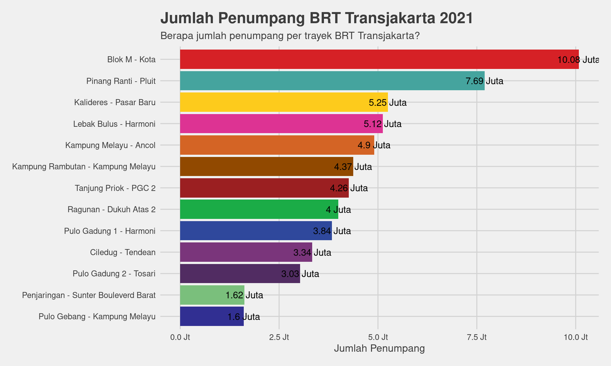
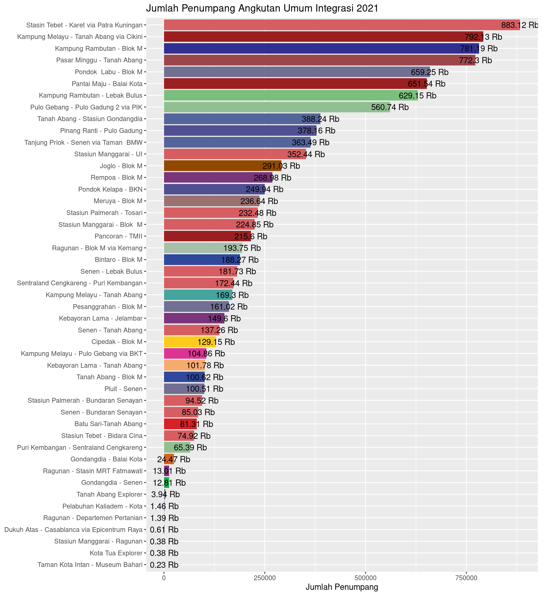
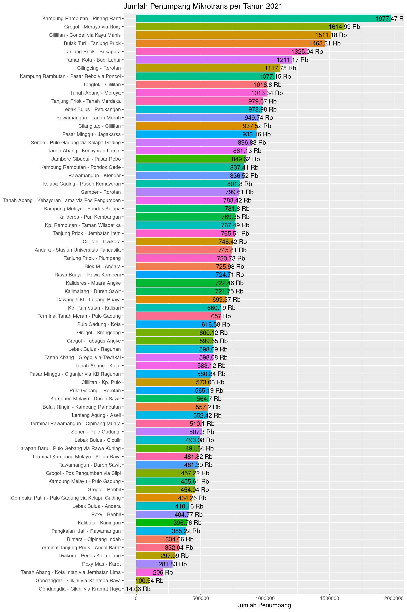
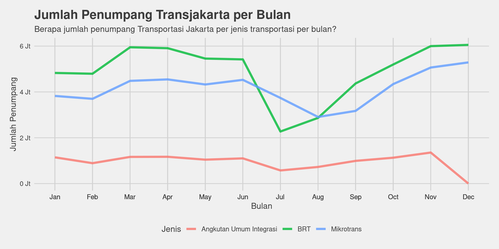

Lihat Kode
# Memuat library
library(dplyr)
library(ggplot2)
library(ggthemes)
library(dygraphs)
library(scales)Transjakarta merupakan sistem transportasi publik utama di Jakarta. Selain karena harganya yang sangat terjangkau, Transjakarta menjadi moda transportasi favorit masyarakat karena ia menjangkau sebagian besar wilayah di Provinsi Daerah Khusus Ibukota Jakarta. Pertama kali beroperasi di Jakarta pada tahun 2004 dengan trayek Koridor 1: Blok M - Kota, kini Transjakarta telah memiliki lebih dari 100 trayek yang melayani kebutuhan transportasi masyarakat ibukota. Seberapa besar masyarakat menggunakan moda transportasi ini? Mari kita mencari tahu melalui analisis data berikut ini.
# Memuat library
library(dplyr)
library(ggplot2)
library(ggthemes)
library(dygraphs)
library(scales)Datasets di bawah ini berisi Data Penumpang Bus Transjakarta Tahun 2021, yang didapatkan dari Jakarta Open Data, Dinas Perhubungan Provinsi DKI Jakarta. Dataset dibuat pada 12 April 2022 dan memiliki frekuensi penerbitan satu bulan sekali. Untuk mendapatkan data tahunan, maka diperlukan penyatuan 12 data bulanan.
# Memuat dataset bulanan
jan2021 <- read.csv("datasets/data-penumpang-bus-transjakarta-januari-2021.csv")
feb2021 = read.csv("datasets/data-penumpang-bus-transjakarta-februari-2021.csv")
mar2021 = read.csv("datasets/data-penumpang-bus-transjakarta-maret-2021.csv")
apr2021 <- read.csv("datasets/data-penumpang-bus-transjakarta-april-2021.csv")
mei2021 <- read.csv("datasets/data-penumpang-bus-transjakarta-mei-2021.csv")
jun2021 <- read.csv("datasets/data-penumpang-bus-transjakarta-juni-2021.csv")
jul2021 <- read.csv("datasets/data-penumpang-bus-transjakarta-juli-2021.csv")
agu2021 <- read.csv("datasets/data-penumpang-bus-transjakarta-agustus-2021.csv")
sep2021 <- read.csv("datasets/data-penumpang-bus-transjakarta-september-2021.csv")
okt2021 <- read.csv("datasets/data-penumpang-bus-transjakarta-oktober-2021.csv")
nov2021 <- read.csv("datasets/data-penumpang-bus-transjakarta-november-2021.csv")
des2021 <- read.csv("datasets/data-penumpang-bus-transjakarta-desember-2021.csv")# Membuat dataset tahunan
tj2021 <- rbind(jan2021, feb2021, mar2021, apr2021, mei2021, jun2021, jul2021, agu2021, sep2021, okt2021, nov2021, des2021)
# Menampilkan 5 baris pertama tj2021
head(tj2021, 5)| tahun | bulan | jenis | kode_trayek | trayek | jumlah_penumpang |
|---|---|---|---|---|---|
| 2021 | 1 | Mikrotrans | JAK.88 | Terminal Tanjung Priok - Ancol Barat | 1473 |
| 2021 | 1 | Mikrotrans | JAK.85 | Bintara - Cipinang Indah | 20280 |
| 2021 | 1 | Mikrotrans | JAK.84 | Terminal Kampung Melayu - Kapin Raya | 28779 |
| 2021 | 1 | Mikrotrans | JAK.80 | Rawa Buaya - Rawa Kompeni | 54998 |
| 2021 | 1 | Mikrotrans | JA.77 | Tanjung Priok - Jembatan Item | 60284 |
Dalam dataset ini terdapat beberapa kesalahan ketik dan input yang menyebabkan proses analisis data tidak berjalan sempurna. Maka dari itu, diperlukan pembenaran data seperti yang sudah dilakukan pada kotak kode di bawah ini. Selain melakukan proses data cleaning, juga dilakukan proses menambah kolom nama_bulan dengan cara mengambil abreviasi 12 angka bulan dalam datasets tersebut.
# Membenarkan data saltik
tj2021$trayek <- gsub("Ggadung", "Gadung", tj2021$trayek)
tj2021$trayek <- gsub("Ttanjung", "Tanjung", tj2021$trayek)
tj2021$trayek <- gsub("Ppulo", "Pulo", tj2021$trayek)
tj2021$trayek <- gsub("PIK - Balai Kota", "Pantai Maju - Balai Kota", tj2021$trayek)
tj2021$trayek <- gsub("Pinang Ranti - Kampung Rambutan", "Kampung Rambutan - Pinang Ranti", tj2021$trayek)
tj2021$trayek <- gsub("Gondangdia - Cikini via Kramat Jaya", "Gondangdia - Cikini via Kramat Raya", tj2021$trayek)
# Membenarkan kode trayek
tj2021$kode_trayek[tj2021$trayek == "Pantai Maju - Balai Kota"] <- "1A"
tj2021$kode_trayek[tj2021$trayek == "Sentraland Cengkareng - Puri Kembangan"] <- "3E"
tj2021$kode_trayek[tj2021$trayek == "Tanjung Priok - Jembatan Item"] <- "JAK.77"
tj2021$kode_trayek[tj2021$trayek == "Cililitan - Condet via Kayu Manis"] <- "JAK.37"
tj2021$kode_trayek[tj2021$trayek == "Kampung Rambutan - Pinang Ranti"] <- "JAK.71"
tj2021$kode_trayek[tj2021$trayek == "Tongtek - Cililitan"] <- "JAK.43"
tj2021$kode_trayek[tj2021$trayek == "Gondangdia - Cikini via Kramat Raya"] <- "JAK.10B"
tj2021$trayek[tj2021$kode_trayek == "JAK.10A"] <- "Gondangdia - Cikini via Salemba Raya"
tj2021$trayek[tj2021$kode_trayek == "JAK.10B"] <- "Gondangdia - Cikini via Kramat Raya"
# Mendapatkan nama bulan
tj2021$nama_bulan <- month.abb[tj2021$bulan]Selain dataset dari Jakarta Open Data di atas, kami juga memuat dataset yang diambil dari transjakarta.co.id. Dataset tersebut adalah routes.csv yang berisi rincian trayek-trayek seluruh moda transportasi yang dikendalikan oleh PT. Transportasi Jakarta. Tetapi dalam dataset tersebut, kami hanya mengambil kolom route_color yang akan digunakan untuk warna bar chart yang mewakili trayek-trayek. Dataframe rute dan tj2021 dapat disatukan dengan menggunakan kunci berupa kode_trayek yang ada di kedua datasets tersebut.
# Memuat data rute
rute <- read.csv('datasets/routes.csv')
# Hanya mengambil data yang diinginkan
warna_rute <- rute %>%
select(route_id, route_color) %>%
rename(kode_trayek = route_id)
warna_rute$route_color <- sub("^", "#", warna_rute$route_color)
#warna_rute <- merge(x=warna_rute, y=tj2021[ , c("kode_trayek", "trayek")], by="kode_trayek", all.x = TRUE)
#warna_rute <- warna_rute[!duplicated(warna_rute$kode_trayek), ]
#row.names(warna_rute) <- NULL
# Menghubungkan dataset
tj2021$kode_trayek <- factor(tj2021$kode_trayek, levels = warna_rute$kode_trayek)Setelah melalui proses pembersihan data di atas, dan penggabungan datasets, proses selanjutnya adalah menghitung jumlah_penumpang per trayek per tahun. Kode di bawah mengikutsertakan kode_trayek agar memudahkan proses pemberian warna pada plot.
# Mendapatkan jumlah total per trayek per tahun
jmltrayek2021 <- tj2021 %>%
group_by(kode_trayek, trayek, jenis) %>%
summarize(jumlah_penumpang = sum(jumlah_penumpang))
head(jmltrayek2021, 10)| kode_trayek | trayek | jenis | jumlah_penumpang |
|---|---|---|---|
| 1 | Blok M - Kota | BRT | 10079752 |
| 2 | Pulo Gadung 1 - Harmoni | BRT | 3836531 |
| 3 | Kalideres - Pasar Baru | BRT | 5250726 |
| 4 | Pulo Gadung 2 - Tosari | BRT | 3032454 |
| 5 | Kampung Melayu - Ancol | BRT | 4902814 |
| 6 | Ragunan - Dukuh Atas 2 | BRT | 3996604 |
| 7 | Kampung Rambutan - Kampung Melayu | BRT | 4372447 |
| 8 | Lebak Bulus - Harmoni | BRT | 5122397 |
| 9 | Pinang Ranti - Pluit | BRT | 7694406 |
| 10 | Tanjung Priok - PGC 2 | BRT | 4262272 |
Dari tabel di atas kita mengetahui bahwa ada 134 baris data yang masing-masing berisi tentang rincian per trayek selama tahun 2021. Maka dari itu, dapat diketahui bahwa Transjakarta melayani 134 trayek yang beroperasi di seluruh DKI Jakarta. Luar Biasa!. Tetapi, masyarakat awam umumnya menganggap bahwa yang dimaksud dengan ‘Transjakarta’ adalah trayek bus yang memiliki jalurnya tersendiri di jalanan, atau biasa disebut ‘busway’. Transjakarta dan Dinas Perhubungan sendiri mengkategorikan hal itu sebagai ‘Bus Rapid Transit’ atau disingkat BRT.

Lalu, seberapa banyak masyarakat Jakarta yang menggunakan busway? Trayek apa saja yang dikategorikan sebagai BRT? Pertanyaan tersebut dapat dijawab dengan tabel di bawah ini:
# Mendapatkan data jumlah penumpang BRT dalam setahun
brt2021 <- jmltrayek2021 %>%
filter(jenis == 'BRT') %>%
select(kode_trayek, trayek, jumlah_penumpang) %>%
arrange(desc(jumlah_penumpang))
brt2021| kode_trayek | trayek | jumlah_penumpang |
|---|---|---|
| 1 | Blok M - Kota | 10079752 |
| 9 | Pinang Ranti - Pluit | 7694406 |
| 3 | Kalideres - Pasar Baru | 5250726 |
| 8 | Lebak Bulus - Harmoni | 5122397 |
| 5 | Kampung Melayu - Ancol | 4902814 |
| 7 | Kampung Rambutan - Kampung Melayu | 4372447 |
| 10 | Tanjung Priok - PGC 2 | 4262272 |
| 6 | Ragunan - Dukuh Atas 2 | 3996604 |
| 2 | Pulo Gadung 1 - Harmoni | 3836531 |
| 13 | Ciledug - Tendean | 3337261 |
| 4 | Pulo Gadung 2 - Tosari | 3032454 |
| 12 | Penjaringan - Sunter Bouleverd Barat | 1620307 |
| 11 | Pulo Gebang - Kampung Melayu | 1603385 |
Ada 13 trayek yang dilayani oleh BRT Transjakarta. Tentunya, data di atas akan lebih menarik jika disajikan dalam bentuk bar chart seperti di bawah ini:
# Membuat plot brt2021
ggplot(brt2021, aes(x=reorder(kode_trayek, jumlah_penumpang), y=jumlah_penumpang)) +
geom_col(aes(fill=kode_trayek), show.legend = FALSE) +
geom_text(aes(label = paste(round(jumlah_penumpang / 1e6, 2), "Juta"))) +
labs(title="Jumlah Penumpang BRT Transjakarta 2021",
subtitle="Berapa jumlah penumpang per trayek BRT Transjakarta?",
x=NULL,
y="Jumlah Penumpang") +
coord_flip() +
theme_fivethirtyeight() +
theme(axis.title = element_text()) +
scale_fill_manual(values = warna_rute$route_color) +
scale_x_discrete(breaks = brt2021$kode_trayek,
labels = brt2021$trayek) +
scale_y_continuous(labels = unit_format(unit = "Jt", scale = 1e-6))
Dari plot di atas dapat kita ketahui bahwa terdapat sekitar 50 juta pengguna BRT Transjakarta. Koridor 1: Blok M - Kota menjadi trayek dengan jumlah penumpang terbanyak, disusul dengan Koridor 9: Pinang Ranti - Pluit, dan Koridor 3: Kalideres - Pasar Baru. Hal ini dapat terjadi karena ketiga koridor tersebut melayani wilayah yang disebut sebagai ‘Segitiga Emas Jakarta’, yakni pusat kegiatan perkantoran dan keuangan di mana banyak orang Jakarta dan luar Jakarta yang bekerja di sana.
Sekarang mari kita mencari tahu data tentang Transjakarta jenis Angkutan Umum Integrasi. Angkutan Umum Integrasi adalah moda transportasi yang menjadi penghubung antara trayek BRT, atau menjadi cabang yang melayani wilayah yang tidak dilayani oleh BRT.

Bagaimana antusias masyarakat Jakarta dalam menggunakan AUT, tabel di bawah adalah lima teratas data yang telah dikumpulkan sepanjang tahun 2021:
# Mendapatkan data angkutan umum terintegrasi
aut2021 <- jmltrayek2021 %>%
filter(jenis == 'Angkutan Umum Integrasi') %>%
select(kode_trayek, trayek, jumlah_penumpang) %>%
arrange(desc(jumlah_penumpang))
head(aut2021, 5)| kode_trayek | trayek | jumlah_penumpang |
|---|---|---|
| 6C | Stasin Tebet - Karet via Patra Kuningan | 883116 |
| 5M | Kampung Melayu - Tanah Abang via Cikini | 792133 |
| 7B | Kampung Rambutan - Blok M | 781188 |
| 9D | Pasar Minggu - Tanah Abang | 772295 |
| 1E | Pondok Labu - Blok M | 659247 |
Yap, ternyata AUT memiliki trayek yang lebih banyak dibandingkan dengan BRT. Hal ini terjadi karena jalur busway memerlukan lebar jalan yang luas, dan hanya segelintir jalanan di Jakarta yang bisa dipasangkan jalur busway. Oleh karenanya, AUT masih menggunakan jalan utama dan halte di pinggir jalan dalam hal antar jemput penumpang. Dengan ini, maka AUT lebih bisa menjangkau pemukiman/pusat kegiatan yang tidak memiliki jalanan luas yang memadai.
Grafik di bawah adalah data jumlah penumpang AUT per tahun 2021:
# Membuat plot jumlah penumpang angkutan umum integrasi
ggplot(aut2021, aes(x=reorder(trayek, jumlah_penumpang), y=jumlah_penumpang)) +
geom_col(aes(fill=trayek), show.legend = FALSE) +
geom_text(aes(label = paste(round(jumlah_penumpang / 1e3, 2), "Rb"))) +
labs(title = "Jumlah Penumpang Angkutan Umum Integrasi 2021",
x = NULL,
y = "Jumlah Penumpang") +
coord_flip() +
scale_fill_manual(values = warna_rute$route_color)
Menurut Badan Pusat Statistik Jakarta 2021, jumlah angkutan umum berbasis bus kota (Bus Transjakarta) adalah 1680, di antara seluruh bus yang melayani DKI Jakarta yang berjumlah 6428 kendaraan. Jumlah ini mengalami penurunan 34,58 persen dibandingkan tahun 2020 yang berjumlah 9826 kendaraan.
Berbeda dengan Bus Rapid Transit dan Angkutan Umum Integrasi yang menggunakan kendaraan bus, Mikrotrans adalah moda transportasi yang menggunakan minibus. Masyarakat Jakarta biasa menyebut moda transportasi ini sebagai ‘angkot’ atau ‘mikrolet’. Mikrotrans hadir sebagai solusi bagi masyarakat yang ingin bepergian ke tempat yang tidak dapat dijangkau oleh kendaraan besar, atau yang jumlah penggunanya sedikit.

Apakah kehadiran Mikrotrans dimanfaatkan oleh masyarakat Jakarta? Trayek apa saja yang dilayani Mikrotrans? Mari kita lihat datanya!
# Mengambil data pengguna jumlah pengguna Mikrotrans
mikro2021 <- jmltrayek2021 %>%
filter(jenis == 'Mikrotrans') %>%
select(kode_trayek, trayek, jumlah_penumpang) %>%
arrange(desc(jumlah_penumpang))
head(mikro2021, 5)| kode_trayek | trayek | jumlah_penumpang |
|---|---|---|
| JAK.71 | Kampung Rambutan - Pinang Ranti | 1977472 |
| JAK.30 | Grogol - Meruya via Roxy | 1614991 |
| JAK.37 | Cililitan - Condet via Kayu Manis | 1511182 |
| JAK.15 | Bulak Turi - Tanjung Priok | 1463311 |
| JAK.29 | Tanjung Priok - Sukapura | 1325037 |
Mikrotrans memiliki trayek paling banyak dalam jenis transportasi Transjakarta. Tentunya hal ini disebabkan karena ukuran kendaraan yang kecil sehingga dapat menjangkau sebagian besar wilayah Jakarta yang memiliki lebar jalan yang tak luas. Selain itu, Mikrotrans juga menjangkau masyarakat mengengah ke bawah yang biasanya tinggal di jalan sempit, dan dengan tarif yang masih digratiskan oleh pemerintah Jakarta, menyebabkan Mikrotrans menjadi moda transportasi yang diminati oleh warga Jakarta.
# Membuat plot Mikrotrans
ggplot(mikro2021, aes(x=reorder(trayek, jumlah_penumpang), y=jumlah_penumpang)) +
geom_col(aes(fill=trayek), show.legend = FALSE) +
geom_text(aes(label = paste(round(jumlah_penumpang / 1e3, 2), "Rb"))) +
labs(title = "Jumlah Penumpang Mikrotrans per Tahun 2021",
x = NULL,
y = "Jumlah Penumpang") +
coord_flip()
Sebelumnya kita sudah mendapatkan statistik penggunaan Transjakarta di tahun 2021. Lalu bagaimana dengan jumlah penumpang per bulannya?
# Mendapatkan jumlah penumpang per bulan
jmlbulan <- tj2021 %>%
group_by(bulan, nama_bulan, jenis) %>%
summarize(jumlah_penumpang = sum(jumlah_penumpang))# Membuat plot jmlbulan
ggplot(jmlbulan, aes(x=bulan, y=jumlah_penumpang, color = jenis)) +
geom_line(size = 1.5, alpha = 0.8) +
labs(title = "Jumlah Penumpang Transjakarta per Bulan",
subtitle = "Berapa jumlah penumpang Transportasi Jakarta per jenis transportasi per bulan?",
x = "Bulan",
y = "Jumlah Penumpang",
color = "Jenis") +
theme_fivethirtyeight() +
theme(axis.title = element_text()) +
scale_x_continuous(breaks = jmlbulan$bulan,
labels = jmlbulan$nama_bulan) +
scale_y_continuous(labels = unit_format(unit = "Jt", scale = 1e-6))
# Membuat dataframe jmlbulan
jmlbulan_df <- data.frame(jmlbulan)
jmlbulan_df$bulan <- sub("^", "2021-", jmlbulan_df$bulan)
jmlbulan_df$bulan <- paste0(jmlbulan_df$bulan, "-1")
jmlbulan_df$bulan <- as.Date(jmlbulan_df$bulan)
# Mengubah bentuk dataframe
jmlbulan_df <- as.data.frame.matrix(xtabs(jumlah_penumpang~bulan+jenis, jmlbulan_df))# Membuat plot interaktif
dygraph(jmlbulan_df, main = "Jumlah Penumpang Transjakarta per Jenis Kendaraan 2021", ylab = "Jumlah Penumpang")Grafik di atas menunjukkan bahwa terdapat penurunan penumpang secara drastis yang terjadi di bulan Juli 2021. Penurunan ini terjadi di seluruh jenis transportasi Transjakarta. Jika kalian tinggal di Jakarta dan sekitarnya, mungkin kalian ingat dengan wabah Covid-19 yang terjadi di bulan tersebut. Orang-orang yang terjangkit Covid-19 varian Delta mengalami kenaikan yang sangat pesat, yakni empat kali lipatnya dibandingkan dengan bulan Juni 2021.
Kematian akibat Covid-19 yang semakin meningkat setiap harinya menyebabkan pemerintah Indonesia menerapkan Pemberlakuan Pembatasan Kegiatan Masyarakat (PPKM) Darurat yang berlaku pada tanggal 2 hingga 25 Juli 2021. Salah satu kebijakan yang pemerintah ambil yakni pengetatan aktivitas, terutama menetapkan 100% kerja dari rumah untuk sektor nonesensial, dan pengaturan kapasitas maksimal 70% untuk transportasi umum.
total_penumpang <- tj2021 %>%
group_by(jenis) %>%
summarize(jumlah_2021 = sum(jumlah_penumpang))
total_penumpang| jenis | jumlah_2021 |
|---|---|
| Angkutan Umum Integrasi | 11281390 |
| BRT | 59111356 |
| Mikrotrans | 49915801 |
Dari analisis di atas bisa kita ketahui bahwa moda transportasi berbasis BRT adalah yang paling diminati di Jakarta. Walau begitu, diterapkannya PPKM oleh pemerintah yang memaksa para pekerja yang berkantor di daerah Segitiga Emas Jakarta untuk bekerja di rumah menyebabkan penurunan drastis penggunaan transportasi BRT ini. Akan tetapi, penurunan drastis tidak begitu dirasakan oleh Mikrotrans. Hal ini disebabkan karena Mikrotrans biasanya menjadi penghubung satu daerah pemukiman dengan daerah pemukiman lain, tentunya mobilitas seperti ini akan selalu diperlukan oleh sebagian besar masyarakat Jakarta.
Salam Maria, penuh rahmat, Tuhan sertamu.